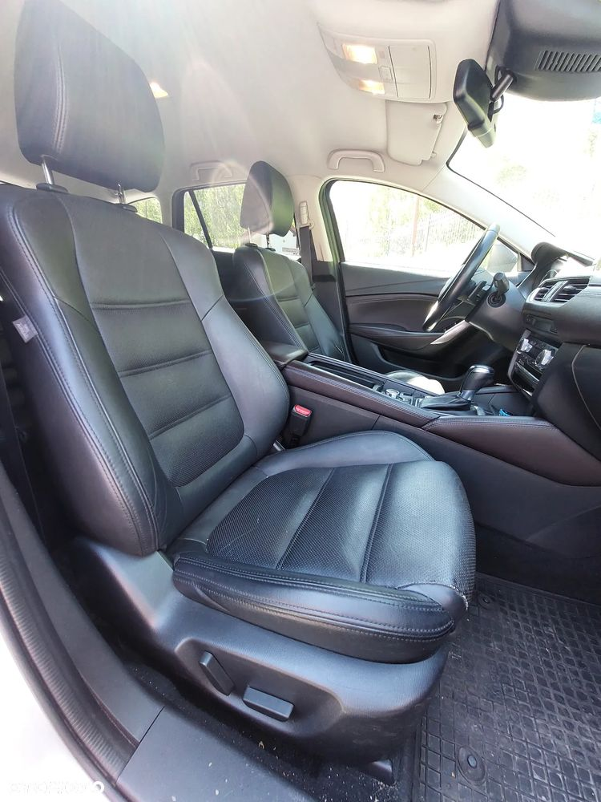
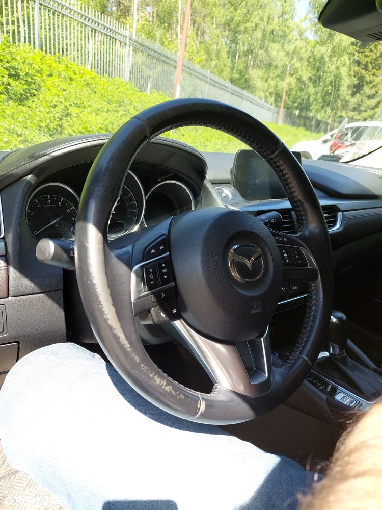
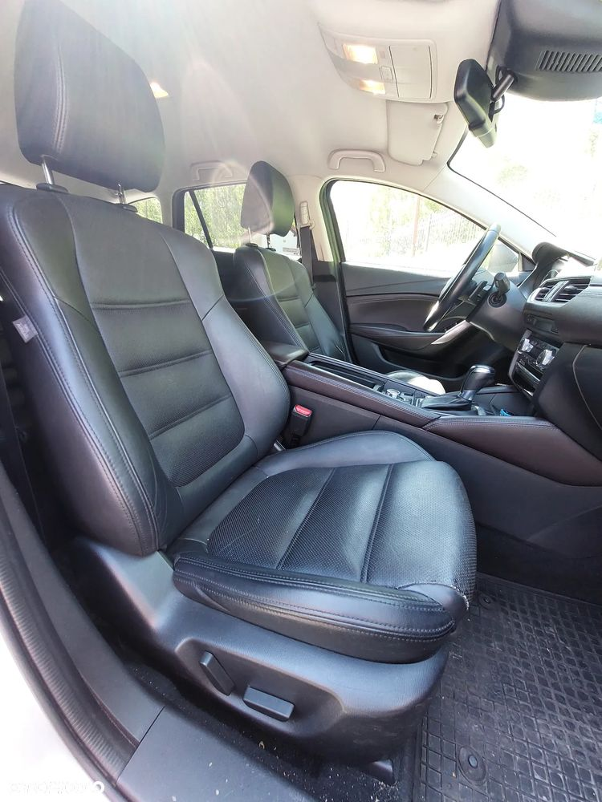
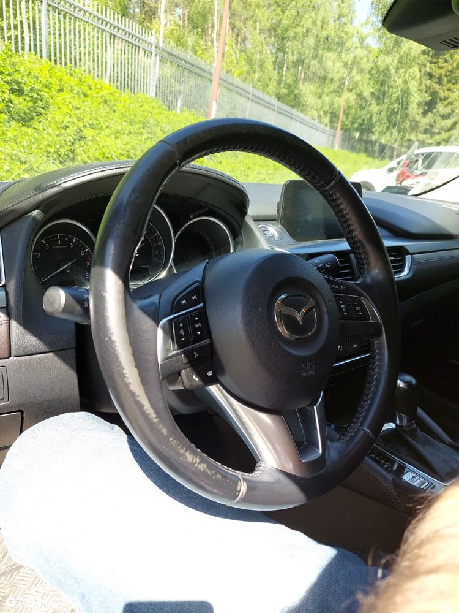

Auto w jednych rękach od nowości. Ostatnie dwa lata niewiele jeździło - służyło jako drugie w domu.
Jest w stanie normalnego użytkowania. Nie jest "przygotowane" do sprzedaży jest w takim stanie jak podczas użytkowania. Spalanie realne to ok. 8 - 9 L/100km.
Auto świetnie się prowadzi, jest lekkie, ma wystarczająco mocy do bardzo elastycznego przemieszczania się i daje bardzo dużo pewności i kontroli.
Automatyczna skrzynia biegów.
Wolnossący silnik benzynowy.
Skórzana, czarna tapicerka bardzo łatwa w utrzymaniu.
Elektrycznie sterowane przednie fotele z pamięcią dwóch ustawień dla kierowcy.
Podgrzewane przednie i tylne zewnętrzne fotele.
Wyświetlacz head-up.
Aktywny tempomat.
Adaptacyjne światła LED, idealnie oświetlające drogę.
Kamera cofania.
Czujniki parkowania przód / tył.
Oryginalny odłączany hak.
Dwa komplety kół z oponami lato / zima z felgami aluminiowymi 17".
Kolor srebrny.


 
